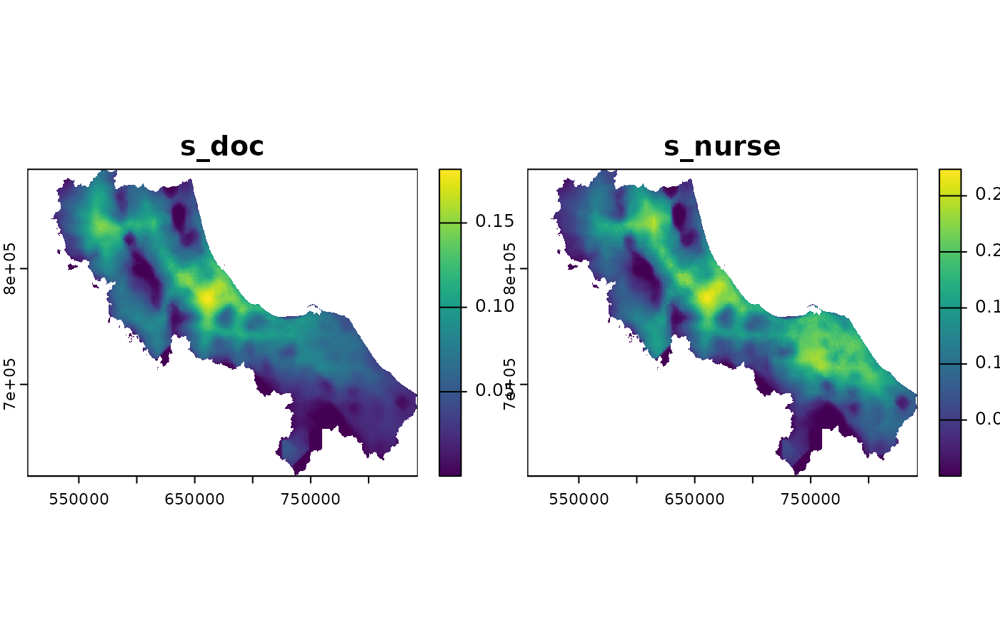
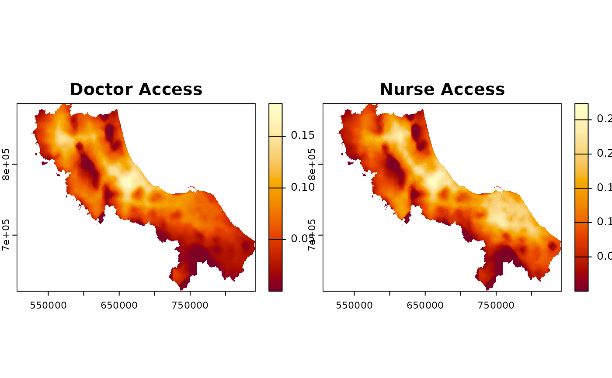
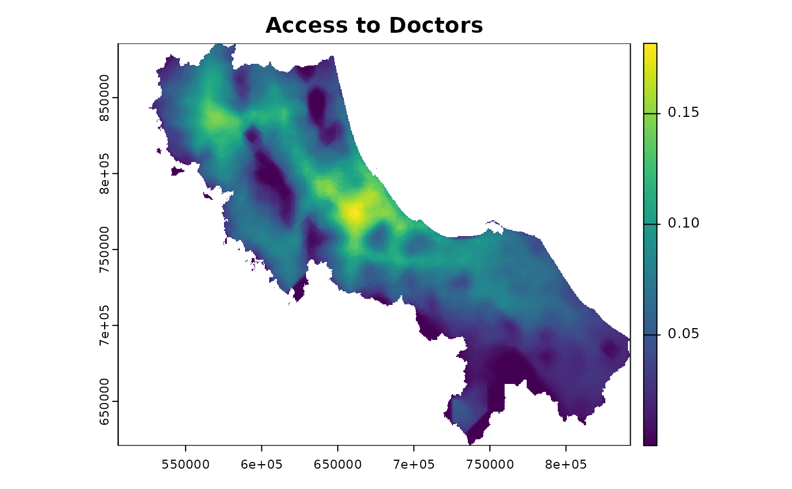

Plot method for spax objects. This function visualizes the accessibility surface(s) contained in a spax object using the terra plotting engine.
Usage
# S3 method for class 'spax'
plot(x, ...)Details
This is a simple wrapper around [terra::plot()] for SpatRaster objects. For full control over plot appearance, including layer selection, color schemes, legends, and additional map elements, see the documentation of the terra package (?terra::plot).
Examples
# Load example data
library(terra)
library(sf)
#> Linking to GEOS 3.12.1, GDAL 3.8.4, PROJ 9.4.0; sf_use_s2() is TRUE
# Load data
u5pd <- read_spax_example("u5pd.tif")
hos_iscr <- read_spax_example("hos_iscr.tif")
# Calculate accessibility
result <- spax_e2sfca(
demand = u5pd,
supply = st_drop_geometry(hc12_hos),
distance = hos_iscr,
decay_params = list(method = "gaussian", sigma = 30),
demand_normalize = "standard",
id_col = "id",
supply_cols = c("s_doc", "s_nurse")
)
# Basic plot of all layers
plot(result)

# Plot with custom title and color scheme
plot(result, main = c("Doctor Access", "Nurse Access"),
col = hcl.colors(100, "YlOrRd"))

# Plot single layer by name
plot(result, y = "s_doc", main = "Access to Doctors")
